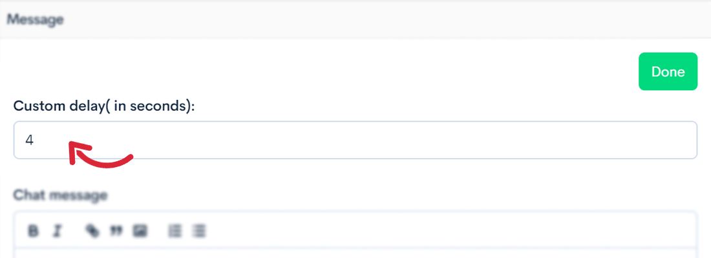
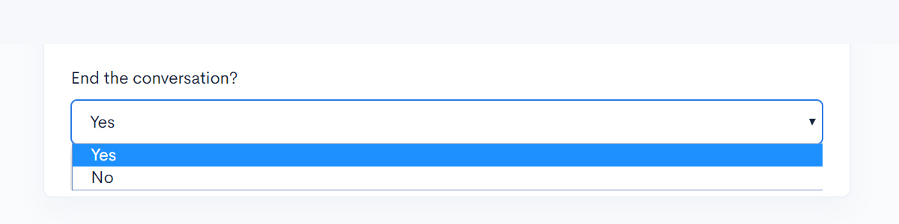
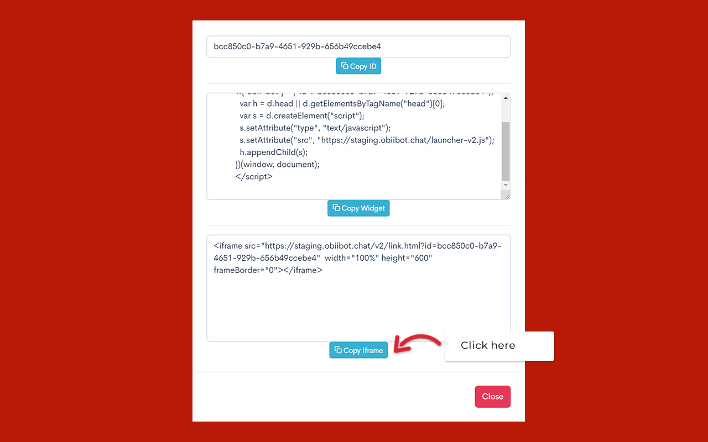
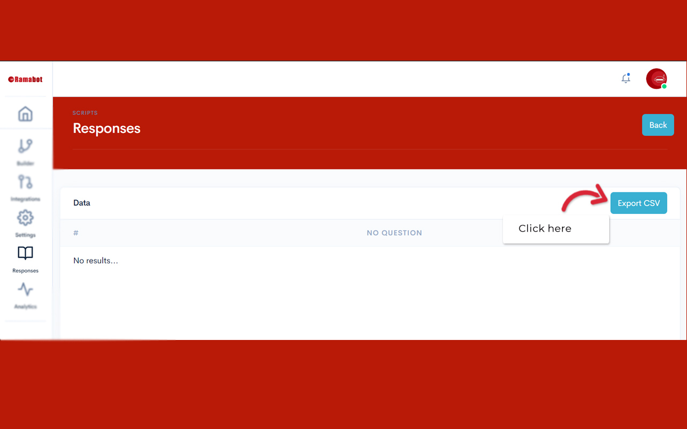

User Manual
Ramabot is a simple to use, dynamic conversation Bot-Building-Platform which allows you create bots to turn your website more engaging. Building a bot with Ramabot interface is a matter of few minutes. Use Drag and Drop tool to build your script and replies. Deploy the JS code on your website to convert your visitors into subscribers.
Building Bots using Ramabot requires no technology understanding. We have designed the Interface to empower scores of small and medium-scale businesses with limited tech skills to harness the power of chatbots at a modest cost.
Getting Started
1. Sign-up with us
Click on the pricing menu in the header. Choose a package which suits your requirement. Sign-up by providing information such as your name, email ID, phone number and so on. Our executives will get in touch with you to get you started
2. Login
You can login by entering your registered email ID and password which you have set.
3. Trial Period
To give you a taste of our service and quality of the tool, we have allotted a trial period for every package. You can use this period to evaluate the bot and its utility for your business.
Building your first Bot
1. Upon login, Click upon "Create new Script" option
2. Enter Details of your bot!

3. Build a bot by using our Bot-Builder!

4. Here, you can find some of our ready-to-use templates to help you build !

Bot Building Elements
Ramabot has 18 in-built script building elements to facilitate Bot conversations. Number of these script building elements may vary for each package. This includes a Text message, Multi-choice, Multi-select, Date-Picker, Appointment Manager, Range Selector, Auto-Suggest Text box, Emoji-based Rating Collector, Scaled Opinion Collector, Link Builder, Card Block, Slider Card Block, A File-Uploader, Video Card, Audio Card, Google Powered Location Text Box, Email Collector and Phone Number Collector.
Ramabot has a JSON API Card which allows you to create dynamic conversations involving data from your applications such as an ERP, CRM, CMS or other cloud-based tools. You can integrate the Bot with a REST API endpoint that supports GET, POST, PUT and DELETE methods.
By nature, Bot building features are multi-lingual in nature. It supports Unicode texts of any language.
Bot Building Elements
Ramabot has 18 in-built script building elements to facilitate Bot conversations. Number of these script building elements may vary for each package. This includes a Text message, Multi-choice, Multi-select, Date-Picker, Appointment Manager, Range Selector, Auto-Suggest Text box, Emoji-based Rating Collector, Scaled Opinion Collector, Link Builder, Card Block, Slider Card Block, A File-Uploader, Video Card, Audio Card, Google Powered Location Text Box, Email Collector and Phone Number Collector.
Ramabot has a JSON API Card which allows you to create dynamic conversations involving data from your applications such as an ERP, CRM, CMS or other cloud-based tools. You can integrate the Bot with a REST API endpoint that supports GET, POST, PUT and DELETE methods.
By nature, Bot building features are multi-lingual in nature. It supports Unicode texts of any language.
Conditional Jumps
Ramabot allows the conditional conversation through the use of ‘RQ Jump. The ‘RQ’ in the RQ Jump stands for ‘Rational Quotient’. RQ Jump allows you to create conditional jumps in the conversation based on a user input. For example, during a conversation, your bot may ask a user which one does she/he like more, Iron Man or Captain America? User X might say she likes Iron man while User Y might say he likes Captain America. RQ Jump allows the bot to have a different set of follow-up conversations upon such selection. For User X, Bot might continue conversation saying “Great Choice, Robert Downey Jr Rocks!” and for User Y, Bot might say “Hey! how good was Chris Evans as Captain America!”

To access RQ Jump, open the script builder and add an element. You will find the RQ Jump icon right next to the ‘edit’ icon.

Along with options to jump a particular conversation point, RQ Jump has 2 default positions.
- 1. No Jump: This is the default state of all RQ jumps. It means that the bot will go to the conversation element present in the chronological order below.
- 2. End of Conversation: When this option is selected, the Bot ends the conversation.

Helper Elements
RamaBot has a set of helper elements to assist you in building conversations which create a human-like experience for the user.
1. Custom Delay:
Every bot element has a custom delay Helper element. This helps in creating a custom delay (defined in the number of seconds) to create humanized content delivery and also help in creating ample time for the user to read a text before the next text turns up.
2. Halt Conversation:
Every bot element has a ‘halt conversation’ Helper Element. This is a switch. If turned on, this holds the conversation at that very point, till user wishes to continue conversation!

3. End Conversation:
This too, is a switch. If turned on, this helper element shows a “End Conversation” button in the conversation interface and allows the user to end the conversation with the Bot from the front end.
4. Back:
This switch, when turned on, shows a “Back” button in the conversation interface and allows the user to go back to the previous conversation point.

5. Skip:
This switch, when turned on, shows a “skip” button in the conversation interface and allows the user to skip a conversation point.

6. Swear Jar:
To avoid abusive language and obscene conversations, We have created Swear Jar Helper Element. Swear Jar lets you create a library of abuses and allows you to let the set the bot reaction to it.

This is a multi-select text box. Fill this up with abuses, swear words you can think of. This lets Bot build a library of abuses.

You enter the response you want your bot to give when it encounters an abuse during conversation.

This lets you guide your Bot to either end the conversation after it gets abused or continue despite of it.
installation guide
Ramabot can be installed on a website as a widget or can be embedded into the website pages. Once the bot is scripted, on the dashboard thumbnail.
1. Look for an option by name “Copy”

2. Adding a widget
Upon clicking, a pop-up comes up. Please click on “Copy widget”. Now, the widget code snippet is copied to your clipboard. Paste this snippet in your website code.
3. Embedding Bot into your webpage:
Click on “Copy Iframe” button in the pop-up. Now, the Iframe code snippet is copied to your clipboard. Paste this snippet into the webpage code where you want to run the bot.
Accessing Chat Transcript
RamaBot not only allows you to download Bot chat transcript in CSV format, it also allows you to integrate bot transcript into google sheets.
1. Downloading Transcript in CSV format
In the Dashboard, click on “Edit” option of the Bot under consideration. On the left-hand side, navigate to the option by name “Responses” and click on it.
Now, click on the “Export CSV” button found on the right-hand side of the page. This will automatically start downloading the bot transcript in CSV to your local machine.
2. Integration
In the Dashboard, Click on “Edit” option of the Bot under consideration. On the left-hand side, navigate to the option by name “Integrations” and click on it.

You will now see a Google Sheets thumbnail. Upon clicking the thumbnail, it will interface will prompt you to connect with your google account. Connect with your preferred google account.

Google will verify your account, and upon verification prompts to grant permission to Ramabot to change and update your google spreadsheets. Please click 'allow’. This grants us permission to insert Bot transcript data into your google spreadsheets.
Now, Enter a filename and click on create. This sheet will contain Bot chat transcript.

Billing
We have created packages tailor-made for small and medium scale businesses. You can begin by selecting package appropriate for you. Every package has a trial period associated with it. During this time, you can test the Bot for its utility and experience the Bot engagement.
Once the trial period is over, you can to subscribe to the package you have selected by paying either a monthly fee or a yearly fee. This fee will be non-refundable.